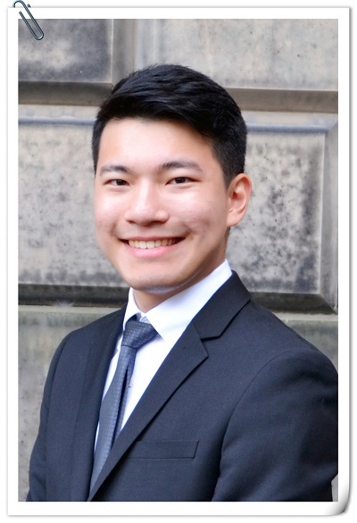
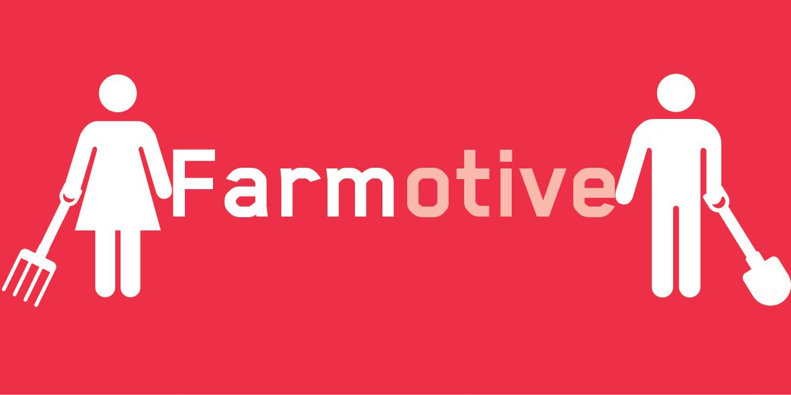
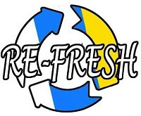
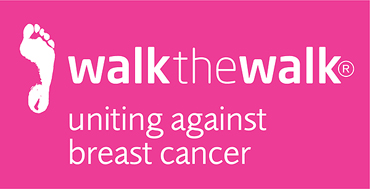
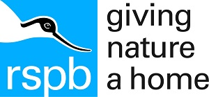
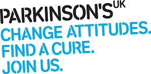
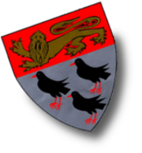
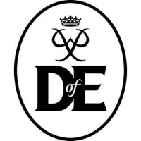
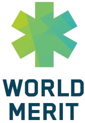

2nd year BSc Artificial Intelligence and Computer Science Student at the University of Edinburgh.
I am highly multicultural, ambitious and enjoy leadership and personal development through volunteering and various work experiences across different industries.
My interest lies in technology and business development.
Short Term: Take advantage of youth and do as much as possible during my college life: extracurricular activities, volunteering, tech projects, work experience, internships and start up experience.
Long Term:
Aspiring entrepreneur in the converging field of AI, Robotics, Software Engineering and Sustainable Developments. Focusing on products that can bring smiles to people.
I am a first generation Chinese-Spanish citizen and the first person in my family to attend university in the UK. That means I can speak Chinese, English and Spanish fluently and I take pride in my work.

As a Brand Representative I work with RMP Enterprise over the academic year to promote career opportunities from graduate employers. Clients included Accenture, Aldi, BAE Systems and RBS. I help my clients increase their brand awareness at my university, and increase their applications from target students.
Represent all students in my cohort to make positive changes to the student learning experience in the course Fundamentals of Innovation-driven Entrepreneurship. As a Class Rep, I gather feedback from peers and discuss it with my Course Organiser directly or in Student-Staff Liaison Committees (SSLCs) which are held regularly in my School.
Buddies is a peer support programme in which home students (Edinburgh Buddies) support incoming exchange students coming to study at the University of Edinburgh. Event planning and liaising with the Buddies Committee.
Public engagement scheme providing a mobile science centre experience, consisting of approximately 50 hands-on activities – aimed at early secondary school pupils and public groups – and representing concepts from across science and engineering. Supported various elements of on-the-day delivery –especially in enthusiastically engaging visitors as well as communicating and discussing the presented topics successfully.
Intermediate: Java, HTML&CSS
Fundamental: Python, Haskell
Novice: MATLAB, C, JavaScript
Proficient: English, Chinese
Advanced: Spanish
Novice: Portuguese

FARMotive connects farmers living in poverty with unused farmlands in India. Collaborating with NGOs, we aim to identify and recruit farmers living in poverty and provide agricultural training. This way, farmers can learn to grow more productive crops. This increases the revenue for both farmers and the unused farmland owners. With FARMotive, landowners leave the entire crops management to us. With FARMotive, farmers will not only receive the opportunity to work but also the opportunity to develop their skills through training which will increase their income by 30 - 50 %.
During my Erasmus+ Internship in Portugal, I worked in a team of 5 engineers and built a small mobile robotic platform from scratch using Arduino, Raspberry Pi, infrared sensors, motors, CAD and ROS. Programmed bio-inspired mechanisms such as ant's behaviour in getting out of a maze using odometry.
Ambassadors are the friendly face for the University of Edinburgh. I was the first point of contact for many families and prospective students arriving at the central campus. My role also involved sharing the student experience, human sign posting and helping those who are lost.
Student Conference Organizer for the 1 week long Sixth International Conference on Learning Analytics and Knowledge (LAK'16) and the Third ACM conference on Learning@Scale (L@S'16). My responsibility included customer service at the reception, streaming and recording the conference.
My role involved: Quality insurance of food and packaging for deliveries; Ensure best customer experience in the restaurant by providing excellent customer service; Given responsibility to management roles; Performed general duties, bartender, waiter and cashier tasks

Refresh is a small company formed by fellow high school students to compete in the Young Enterprise Competition. The company's focus is to achieve fashion with sustainable development in mind by personalising and improving used clothes. A portion of the profit made was donated to Charity. My responsibility includes financial management and monitoring of the company.
Volunteers are the public face of the Imaginate Festival; helping the school, family and delegate audiences at each venue, staffing industry and guest events, and supporting the Festival team behind the scenes throughout the week. My shifts were at National Museum of Scotland, Edinburgh Festival Theatre and Traverse Theatre Edinburgh.
I assisted a class of 12 school children from nursery in tours and hands on workshops in the Jupiter woodland classroom. I also lead activities and tours with school visits of around 36 children from primary school. My role also involved maintaining classroom and woodland garden
My role involved welcoming the visiting public to Jupiter Artland and communicating with them about our permanent collection, our gallery exhibitions and answering/responding to any general enquiries. I also invigilated gallery exhibitions and outdoor artland ensuring visitors are aware of the Jupiter Artland dos and don'ts.

I was in the directional team and my role involved pointing walkers in the right direction as they arrive, move around, and leave MoonWalk City at Holyrood Park.

I was part of a team that was in charge of the minibeasts hunt activity at the festival. I helped families and their children exploring the natural world.

A day committed to the cause of Parkinson's UK and spur all runners on to the finish line in the Edinburgh Marathon Festival 2016, louder cheering for runners from Parkinson's UK.

Assisted primary school teachers and taught a class of 24 children aged 8 to 9 in maths and English. With the aid of existing equipment and resources, I have made the lessons dynamic and enjoyable to the children and they became more willing to learn and participate in class more often.
Edinburgh's Award: Summer UK Work Experience
Edinburgh's Award: Summer UK Volunteering
Edinburgh's Award: Summer International Work Experience
Edinburgh's Award: Global Citizenship
Edinburgh's Award: Semester Work Experience
Principal's Go Abroad Scholarship
Erasmus+ Internship in Portugal

The Duke of Edinburgh's International Award

1st Merit360 Cohort